7.7. Graph Tools¶
An advanced graph and image visualization tool is available in CCS. It can display arrays of data in various graphical types (amplitude X time, FFT, etc.). The arrays of data are stored in a device’s memory in various formats (datapath size, precision, sign, Q values).
The following types of graphs are available:
- Single Time. Single line graph that plots the array values in the “Y” axis and the array index (sample count) in the “X” axis.
- Dual Time. Dual line graph that plots two single time graphs in the same view.
- FFT Magnitude. Single line graph that calculates the frequency domain magnitude by performing a Fast Fourier Transform on the data array. It can display both real and complex data.
- FFT Magnitude & Phase. Dual line graph that calculates the frequency domain magnitude and phase by performing a Fast Fourier Transform on the data array. It can display both real and complex data.
- FFT Complex. Dual line graph that calculates the frequency domain magnitude and phase by performing a Fast Fourier Transform on two data arrays. It can display non-interleaved complex data.
- FFT Waterfall. Multiple line graph that calculates the frequency domain magnitude by performing a Fast Fourier Transform on an arbitrary number of data arrays. It can display both real and complex data.
The supported data formats:
- Datapath size: 8, 16, 32 and 64 bits.
- Single and double-precision floating point.
- Signed and unsigned integers.
The data can be updated in several ways:
Refresh. Update the data when this button is pressed. Depending on the device and mode of operation, the data will be updated only when the device is halted.
Continuous Refresh. Update the data continuously at a rate defined by CCS Properties (no faster than 100ms).
Refresh on halt. Update the data when the device is halted.
Breakpoints can be set to automatically update the data when reached.
- Update View
- Refresh All Windows
- Target Halt and Refresh
Note
In order for graphs to be used, they need a target device to be connected - they cannot be used offline.
From the main menu click on Tools → Graph, then select a specific graph type from the graph submenu.
7.7.1. How it works¶
The graph utility is basically a Memory Viewer that, instead of displaying the data in raw format, shows it in a X-Y plot format.
The data formatting and plotting is entirely done by the host but using the data present on the target device’s memory. In other words, the graph tool does not modify the data on the target memory but only fetches it via the Debug Probe connection to update its view.
In order to update its view, the graph tool requires a trigger set by a debug halt event such as a Manual halt, a Breakpoint or enabling the option Continuous update in the Graph Toolbar.
In sequence, the trigger causes the graph tool to perform several tasks:
- Fetch the data samples from the target at a pre-determined address Start Address.
- Perform calculations and transformations that format the data samples according to pre-determined options set by the Graph Properties.
- Plot each individual sample data matching its numerical value on the vertical axis (Y axis) and increment its position on the horizontal axis (X axis).
When the option is selected from the menu Tools → Graph → type of graph, the Graph Properties view is opened.
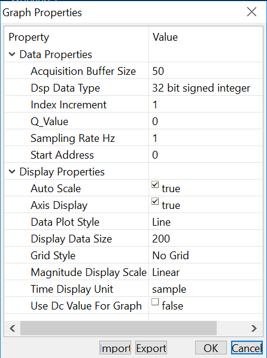
7.7.1.1. Time domain¶
When a time domain graph view is opened, it contains several regions of interest:
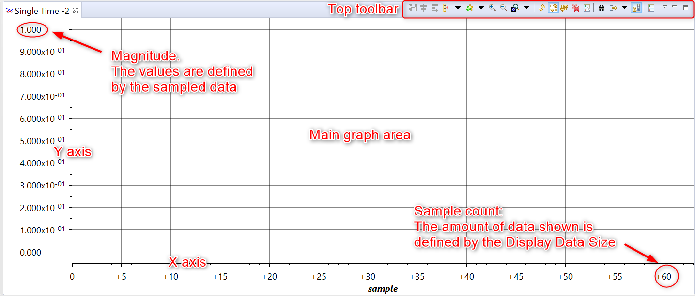
- Axes X and Y: these are the main numerical reference points for the displayed data. These axes change according to various parameters set in the Graph Properties and feature auto-scaling, DC offset, labels, Zoom In and Out and others.
- Magnitude: the numeric representation of the value of each data sample.
- Sample count (or time): the number of samples shown at a given time or their equivalent time set by the Sampling Rate option.
- Main graph area: where the plot is shown.
- Top toolbar: all controls are accessed from the various icons present here.
7.7.1.1.1. Normal time plot¶
During normal operation, the graph shows each sampled data in horizontal sequence following the X axis from left to right and its corresponding value vertically correlated to the magnitude on the Y axis.
To illustrate, the image below shows a data buffer of 64 samples that depicts two periods of a sinewave. The maximum number of samples plotted at each update is defined by the value of the Acquisition Buffer Size, which is equal to 64 in this example.
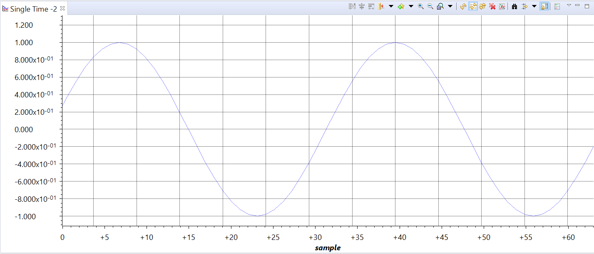
At the second update, the contents of the display are replaced with the new incoming data (which now shows three periods of 64 samples). This second screenshot now shows the origin of the X axis starting at 64, which is set by the Display Data Size value, which is also equal to 64 in this case.

The process is repeated for as many updates as required by the debug process.
7.7.1.1.2. Keeping history¶
If it is desired to maintain a history of the sample data, making the Display Data Size greater than the Acquisition Buffer Size allows to sequentially display the past behaviour of the sampled data.
To illustrate this, take the screenshot below which shows two sample buffer updates: the first 64 samples, set by the Acquisition Buffer Size option, show the buffer starting with a value of 0 and the next 64 samples show the updated values. The Display Data Size option is set to 256, but there are not yet enough samples to reach this limit.
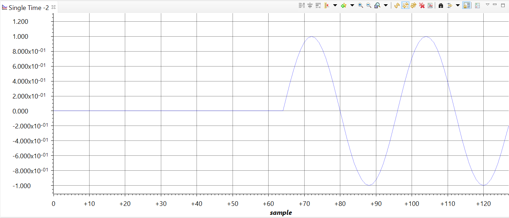
Updating once more shows the additional 64 samples loaded from the target but still did not yet reach the limit of the Display Data Size option.
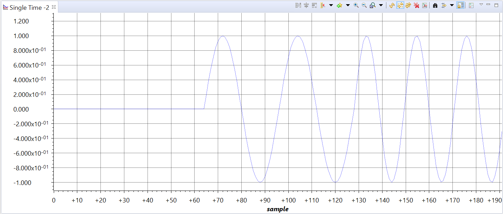
The fourth update shows the entire history of the samples, reaching the limit of the Display Data Size option.
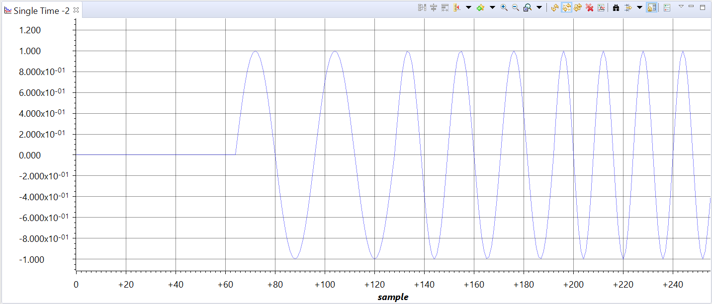
The fifth update discarded the initial buffer size and reflects this by setting the origin of the X axis as a multiple of the Acquisition Buffer Size value of 64. Subsequent updates will keep increasing the origin of the X axis.
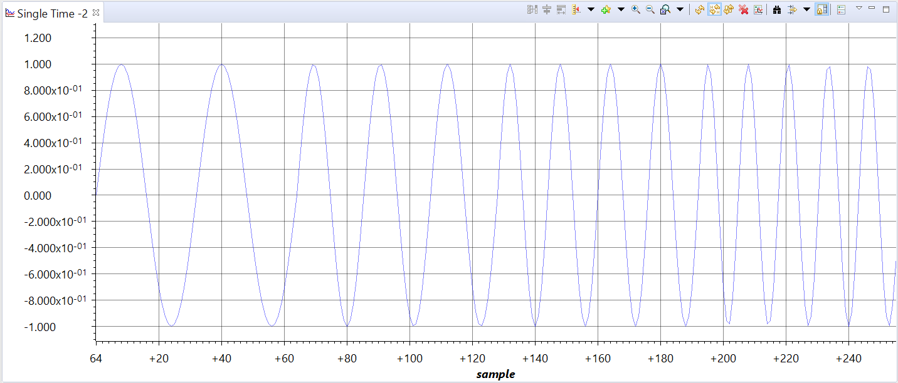
Note
Despite the resemblance, the graph utility cannot be equivalent to a high speed real-time oscilloscope, given the update rate through the Debug Probe and the latencies involved with the breakpoints can only reach as low as 0.1s under extremely ideal conditions. Also, the Sampling Rate is entirely arbitrary and does not reflect any peripherals configured on the target device.
In summary, consider the graph tool as a post-processing utility for signal analysis.
7.7.1.2. Frequency domain¶
When a frequency domain graph view is opened, it contains the same regions of interest shown in the Time domain graph, with the only difference being located in the X axis:
- The maximum limit of the X axis is always fixed and relative to the Sampling Rate (Hz) value:
- The X axis values are the ratio between the Acquisition Buffer Size and the Sampling Rate (Hz):
Given there is no Display Data Size parameter for a frequency domain graph (FFT Magnitude, Complex FFT, FFT Magnitude and Phase), the sample history is not available and requires changing the graph to a Waterfall.
To illustrate, the image below shows a basic FFT Magnitude graph of the same signal shown in the Time domain section above.
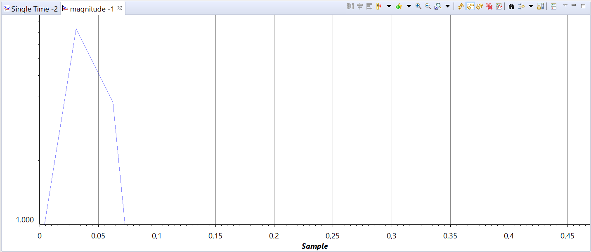
This graph is plotted using the same Acquisition Buffer Size, a Hamming FFT Window Function and a FFT Order of 5 or 32 bins (FFT Frame Size). Also, the Sampling Rate is set to 1HZ to facilitate calculations.
Increasing the FFT Order to 6 improves the accuracy of the FFT. This allows finding the value of the frequency component using the mouse cursor. Simply click on the waveform with the left click mouse to find the amplitude and frequency at that specific point.
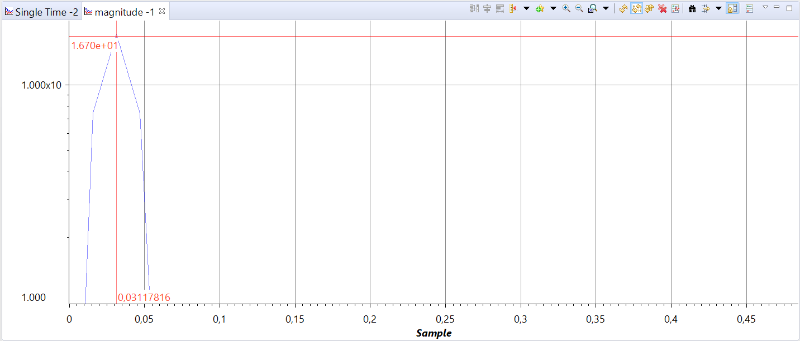
Calculating the center frequency: The first waverform has two periods over 64 samples, yielding a sampling frequency 32 times higher than the fundamental component. This is reflected in the X axis as:
Note
A FFT Order too high can cause severe aliasing and magnitude distortion.
The second update shows the waverform with three periods over 64 samples, which yields a frequency center of X1 = 0.046875. In this screen the Measurement Marks were used to perform a more accurate measurement of the frequency. Simply right-click with the mouse in the middle of the main graph area and select the option Insert Measurement Mark.
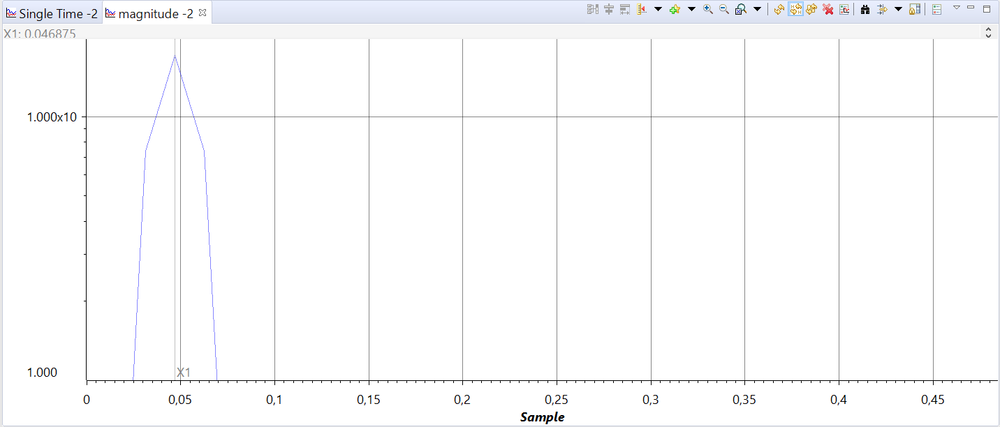
The third and fourth updates show the correlated frequencies of the newer updates X2 = 0.0625 and X3 = 0.078125, and the measurement markers also show the differences between the various measurements.
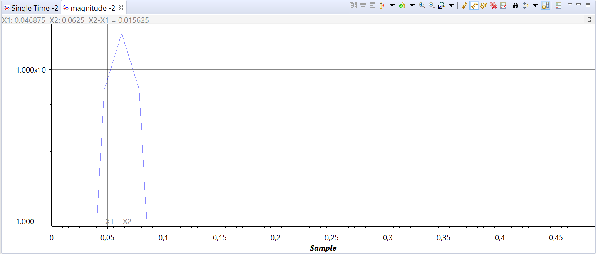

Note
Despite the resemblance, the graph utility cannot be made equal to a high speed spectrum analyzer, given the update rate through the Debug Probe and the latencies involved with the breakpoints can only reach as low as 0.1s under extremely ideal conditions. Also, the Sampling Rate is entirely arbitrary and does not reflect any peripherals configured on the target device.
In summary, consider this tool as a post-processing utility for signal analysis.
7.7.2. Graph properties¶
7.7.2.1. Properties available for all graphs¶
- Acquisition Buffer Size
- DSP Data Type
- Index Increment
- Interleaved Data Sources
- Q Value
- Sampling Rate HZ
- Signal Type
- Start Address [1]
- Grid Style
- Data Plot Style [2]
| [1] | Can be shown in one of the forms below depending on the graph and the signal types (i.e. Real/Complex) and data interleaving
|
| [2] | Not available to FFT Waterfall |
7.7.2.2. Properties only available for time domain graphs¶
Single and Dual time graphs
- Display Data Size
- Time Display Unit
- Use DC value for Graph
- DC value for Graph
7.7.2.3. Properties only available for frequency domain graphs¶
FFT Magnitude, FFT Magnitude & Phase, FFT Complex, FFT Waterfall
- Frequency Display Unit
- FFT Frame Size - Read-only property that is presented to the user; calculated based on the value of FFT order.
- FFT Order
- FFT Window Function
7.7.2.4. Properties only available for FFT Waterfall¶
- MaxY
- Waterfall Height
- Waterfall Frames
7.7.2.5. Detailed descriptions:¶
7.7.2.5.1. Acquisition Buffer Size¶
This option sets the number of samples that the graph tool will read from the target at every data refresh.
In other words, this is the size of the acquisition buffer located at the target and starting at the memory address specified by the option Start Address. When a graph is updated, the acquisition buffer is read from the target and updates the display buffer on the host.
If the target application performs processing of samples one at a time, this option must be set to 1. Otherwise, set it to the size of the array present on the target.
Usually a constant value is used for this option (the array size), but any valid C expressions can be specified as well. The expression is recalculated every time samples are read from the target.
7.7.2.5.2. DSP Data Type¶
This option allows selecting the following data types:
- 64 bit signed integer
- 64 bit floating point
- 32 bit signed integer
- 32 bit unsigned integer
- 32 bit floating point
- 16 bit signed integer
- 16 bit unsigned integer
- 8 bit signed integer
- 8 bit unsigned integer
The data type is specified by the application running on the target and is a common source of errors in the graphed data. Special attention is always required to properly set this option.
7.7.2.5.3. Index Increment¶
This option allows specifying the sample index increment to be plotted. In other words, the value on this option tells the graph tool to skip the positions on the array in order to fetch the subsequent samples.
This offset permits parsing the data array extracting signal data from multiple sources using a single graphical display. Therefore, multiple data sources can be specified for display by entering a corresponding offset value in this option.
This option only makes sense to be used when the Acquisition Buffer Size is greater than 1.
For example, the array below (my_array) has three interleaved signals (S1, S2 and S3).
- To fetch the S1 samples, set the Start Address to my_array and the Index Increment to 3.
- To fetch the S2 samples, the Index increment stays the same but the Start Address is set to my_array + 1.
- Similar logic for the S3 samples: keep the Index Increment but set Start Address to my_array + 2.
uint16_t my_array[12];
| S1[0] | S2[0] | S3[0] | S1[1] | S2[1] | S3[1] | S1[2] | S2[2] | S3[2] | S1[3] | S2[3] | S3[3] |
This option provides a general specification for interleaved sources. If the Interleaved Data Sources option is enabled, the index increment option is disabled.
7.7.2.5.4. Interleaved Data Sources¶
Setting this option to Yes implies a 2-source input buffer, where the odd samples represent the first source and even samples represent the second as shown in the illustration below.
uint16_t my_array[8];
| S1[0] | S2[0] | S1[1] | S2[1] | S1[2] | S2[2] | S1[3] | S2[3] |
This is a special case of the Index Increment option.
This option is only shown in certain types of graphs that require multiple data sources such as Dual Time, FFT Magnitude with Signal Type set to Complex and all other frequency domain graphs.
Setting Interleaved Data Sources to No adds two options: Start Address A and Start Address B.
Setting this option to Yes removes the option Index Increment and the Start Address B.
7.7.2.5.5. Q-Value¶
This option contains a nonzero Q-Value, which are fractional normalized representations of integer values (2’s complement). The data is interpreted using the Q-Value. They are formed by inserting a decimal space in the binary representation of an integer, resulting in greater precision.
The Q-Value indicates amount of the displacement of the decimal point starting from the LSB, according to the equation:
For example, a 16-bit signed integer number with a Q-Value of 11 (for a 12-bit ADC) and sign extended is represented as follows:
| S | S | S | S | n | n | n | n | n | n | n | n | n | n | n | n |
Additional details can be found at the Wikipedia page Q (number_format)
7.7.2.5.6. Sampling Rate (Hz)¶
This option contains an arbitrary value for the sampling frequency, which is used to calculate the time and frequency values displayed on the graph.
Note that this sampling frequency is only arbitrarily related to the data acquisition system running on the target, given the graph tool does not have any awareness about the hardware.
For a time domain graph, this option modifies the values for the X axis when the option Time Display Units is set to either “s”, “ms” or “us”. The X axis range is:
For a frequency domain graph (FFT Magnitude, Complex FFT, FFT Magnitude and Phase), this option sets the range of the X axis to:
7.7.2.5.7. Start Address¶
Start Address is the memory address on the target device that contains the variable or the start of the buffer to be graphed. When the graph is updated, the acquisition buffer, starting at this location, is fetched from the target board. This acquisition buffer then updates the display buffer, which is plotted according to the configured formatting options.
Depending on the type of graph and options used, the Start Address can be expanded to two entries called Start Address A and Start Address B.
Any valid C variables and expressions in the Start Address option can be entered, being the most common both C pointers and arrays. This expression is recalculated every time samples are read from the target device.
7.7.2.5.8. Auto Scale¶
This option enables the automatic scale of the Y axis based on the displayed data values.
Disabling Auto Scale opens two more options: Max Y Value and Min Y Value.
7.7.2.5.9. Axis Display¶
This option enables or disables the axis:
- True: draws a line for each the X and Y axis intersection at the bottom left of the graph. The X values at the intersection point starts at 0 and increments by multiples of the Display Data Size.
7.7.2.5.10. Data Plot Style¶
This option sets how the data is visually represented in the graph. You can choose between the following options:
- Line: connects data values with a line
- Bar: uses vertical lines to display values
7.7.2.5.11. Display Data Size¶
This option sets the number of samples (X axis) that are displayed in the graph at a given time. This option changes the maximum value of the X axis, although the actual value shown will be dependent on the Time Display Units (either samples or time) and the size of the Acquisition Buffer Size.
Any valid C expression can be used to specify the Display Data Size option. This expression is recalculated every time samples are read from the target. This allows to dynamically adjust the size of the display as the buffer on the target is increased.
Signed integer in combination with the Q-Value option can be used to normalize fixed-point values.
7.7.2.5.12. Grid Style¶
This option enables a Minor (dense) or Major (sparse) grid array on the plot. The actual intersection points are heavily dependent on the size of the view, but the minor grid is always an exact subset of the major grid.
7.7.2.5.13. Magnitude Display¶
This option adjusts the Y axis for Linear or Logarithmic display. The linear display is more commonly used for time domain and phase frequency domain graphs (FFT), while the logarithmic is commonly used for magnitude frequency domain graphs (FFT).
7.7.2.5.14. Time Display Units¶
This option adjusts the units to be displayed in the X axis in one of the following formats:
- sample: displays the sample count.
- s, ms or us: displays the time relative to the sampling period defined by the option Sampling Rate.
7.7.2.5.15. Use DC Value for Graph¶
This option sets a fixed DC offset value to the center of the Y axis. Enabling this option opens a new option DC Value For Graph.
The effect is that this will plot the graph centered around the value specified on the DC Value For Graph option. For graphs with 2 plots there will be 2 entries (one for each plot).
If the DC value is not enabled, the center of the Y axis will be set as the average of the minimum and maximum values of the data.
7.7.2.5.16. DC Value For Graph¶
This option sets the DC offset value for the Y axis. It is only enabled when the option Use DC Value For Graph is enabled.
7.7.2.5.17. Max Y Value¶
This option allows specifying the maximum value for the Y axis when Auto Scale is disabled.
7.7.2.5.18. Min Y Value¶
This option allows specifying the minimum value for the Y axis when Auto Scale is disabled.
7.7.2.5.19. Signal Type¶
This option specifies the type of data that will be used to plot the graph:
- Real: the array contains the magnitude data of the signal.
- Complex: the magnitude and phase information are calculated from the real and imaginary parts of the number. When Complex is selected, the Graph Property Dialog box displays the Interleaved Data Source option.
7.7.2.5.20. FFT Frame Size¶
This is a read-only field that shows the number of bins applied to the sample data and used to calculate the FFT. It is a direct correlation of the FFT Order option.
This helps evaluate the maximum limit of the FFT Order that can be applied to the sampled data. This maximum limit is the Acquisition Buffer Size value.
7.7.2.5.21. FFT Order¶
This option sets the order of the FFT applied to the calculations, which is directly reflected by the FFT Frame Size.
7.7.2.5.22. FFT Windowing Function¶
FFT Windowing Function allows you to choose among the following types of window functions:
- Rectangular
- Bartlett
- Blackman
- Hanning
- Hamming
These functions are applied to the data before the FFT calculation is performed.
Additional details about Window functions can be seen at this TI Precision Labs training module
7.7.2.5.23. Waterfall Height¶
Waterfall Height (%) specifies the percentage of vertical window height used to display a window frame.
7.7.2.5.24. Number of Waterfall Frames¶
Number of Waterfall Frames specifies the number of waterfall frames to be displayed.
7.7.3. Troubleshooting¶
7.7.3.1. Data type considerations¶
Given the graph tool is able to work with several different data types, it is mandatory to keep close track of how the data samples are represented in the device memory for a proper data plot.
A very common scenario is to have signed integers on the target and use an unsigned integer as a parameter to the DSP Data Type. That causes very distorted waveforms that still resemble the expected signal.
Another very common mistake is to use a different Q-Value, which shows the waveform correctly but with incorrect values on the Y axis.
A bit less common is to use a completely different DSP Data Type (float instead of integer or vice-versa), which tends to produce either a graph with very high limits or completely random data.